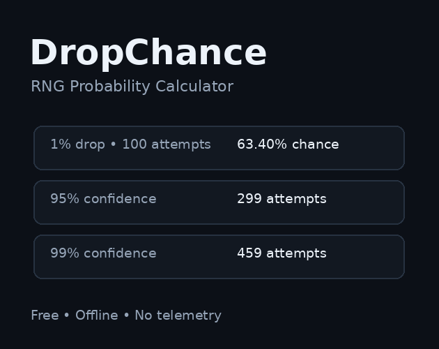

Progression
GrindScope
Turn XP formulas into player-time estimates. Compare curves, inspect target-level pacing and export per-level balancing data.
$2.99+
Get GrindScopeFocused offline tools for progression pacing, game economies and loot systems. Open the file, test your numbers, export the results.
A simple probability calculator for a common RNG question—and a quick way to see how TinyForge tools work.

Enter a drop chance and number of attempts. Get the chance of at least one success, the chance of still missing, expected attempts, expected drops, and the attempts needed to reach common confidence thresholds.
Need full loot tables, Monte Carlo dry-streak analysis or pity systems? DropChance points directly into LootSim.
Download DropChance freeTinyForge Game Tools also offers these focused calculators for modeling pity, leveling pace and in-game currency flows.
Explore how a hard-pity limit affects attempts and when a drop is guaranteed under your pity settings.
Open calculator → ProgressionEstimate XP requirements and the time needed to reach levels using your progression inputs.
Open calculator → EconomyCompare currency faucets (sources) and sinks (spending) to assess the balance of your game economy.
Open calculator →Each tool stays intentionally narrow: fewer menus, faster answers, no SaaS overhead.
Turn XP formulas into player-time estimates. Compare curves, inspect target-level pacing and export per-level balancing data.

Stress-test currency faucets, sinks, wealth growth, purchase behavior and item affordability across long simulations.

Run Monte Carlo loot tests, measure dry streaks and model soft or hard pity before players experience your RNG.
| Question | Tool | Price |
|---|---|---|
| What are the odds I get this drop? | DropChance | Free |
| Is leveling too fast or too grindy? | GrindScope | $2.99+ |
| Will players accumulate too much currency? | EconScope | $3.99+ |
| Will rare drops / pity feel fair? | LootSim | $3.99+ |
Progression + economy + RNG balancing in one limited-time toolkit.